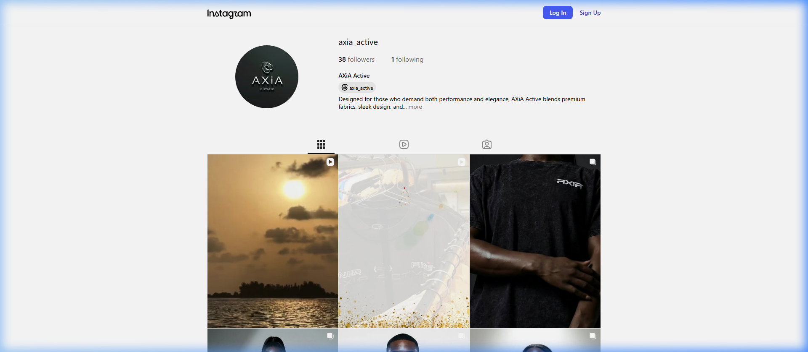
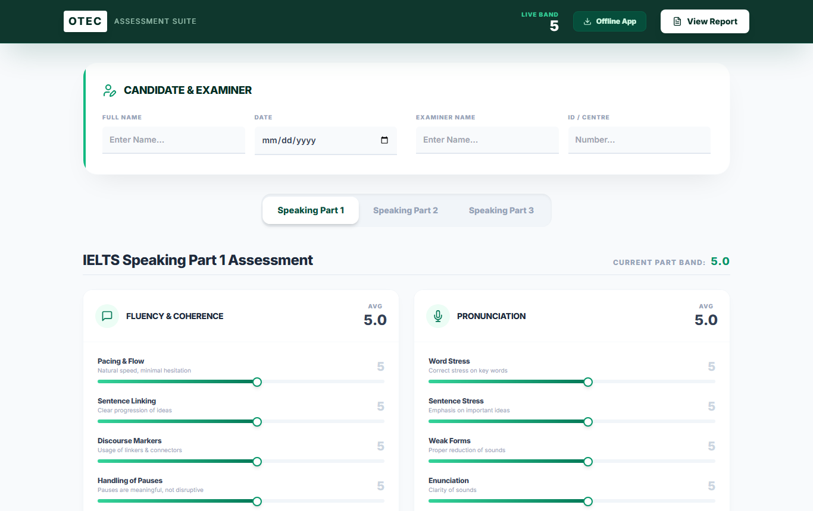

ECOSYSTEMS & MULTI-CHANNEL DISTRIBUTION
Multi-Brand Media Stewardship & Growth
Brands, Social Systems &
Audience Growth.
My background spans both the education and digital media sectors, where I've consistently delivered in content creation, community management, social listening, and engagement-driven campaigns. Right now, I split my time between client web builds, AI-assisted content systems, and running social media for a handful of growing Lagos-based startups.
The 1-to-8 Content Multiplication Architecture
Managing brand velocity requires systemization. Instead of creating ad-hoc posts, I convert single in-depth research briefs or core company announcements into 8 synchronized assets: high-retention LinkedIn slide carousels, viral X insight threads, Instagram infographics, executive email letters, blog deep-dives, short video scripts, and quote cards.
Enterprise Market Intelligence · B2B
Renalytica
I provided full digital stewardship across production web architecture and multi-channel social operations (LinkedIn, Instagram, and X). I translated macroeconomic econometric forecasts and 2,500+ commercial research dossiers into authoritative, humanized executive content that sparks dialogue among founders and corporate directors.
LIVE PRODUCTION PLATFORM
renalytica.com

VERIFIED INSTAGRAM CAROUSEL
@renalytica

OFFICIAL X (TWITTER) CHANNEL
@renalytica

Athleisure & Performance E-Commerce · B2C
AXiA Active
Complete brand lifecycle engineering: I engineered the official e-commerce storefront (axiaactive.com) and managed day-to-day organic and paid social growth via Meta Business Suite. I drafted high-converting lifestyle product narratives and deployed targeted dynamic ad retargeting funnels.
LIVE E-COMMERCE STOREFRONT
axiaactive.com

OFFICIAL INSTAGRAM COMMUNITY
@axia_active

Global K-12 & International Prep · Education
GoFar International Academy
I architected the official institutional web portal (gofarinternationalacademy.com) and directed educational brand communications. I authored inspiring learner case studies, faculty spotlights, and admissions campaigns that steadily expanded parent enrollment inquiries across Lagos.
LIVE INSTITUTIONAL WEB PORTAL
gofarinternationalacademy.com

OFFICIAL INSTAGRAM CHANNEL
@gofar_international

Study Abroad & Standardized Test Prep · EdTech
OTEC Nigeria
I engineered interactive assessment software (IELTS Speaking Assessment Diagnostic Tool) and directed student engagement content across social channels, preparing West African scholars for competitive global academic admissions and standard testing benchmarks.
IELTS SPEAKING ASSESSMENT SUITE
Live Web Tool

90%+
Candidate Target Band Rate
IELTS · TOEFL · SAT · GRE · GMAT
Automated band scoring across Fluency, Pronunciation, Grammar, and Lexicon.